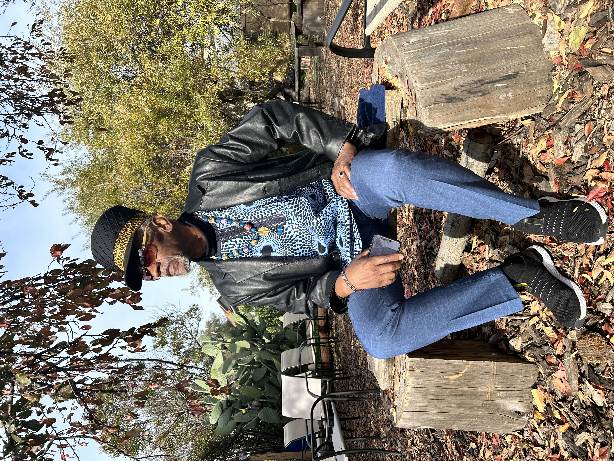
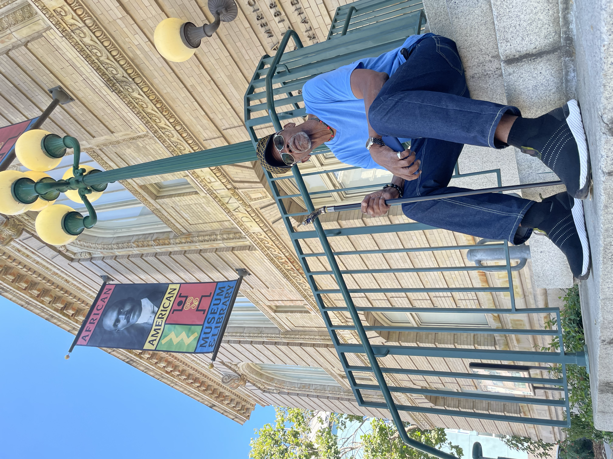

About
Watani Stiner is a former Black Power movement organizer, political prisoner, exile, and elder whose life story spans more than five decades of resistance, survival, and an unwavering commitment to justice.
Born and raised in Los Angeles, Watani became politically active during the turbulent 1960s, organizing within the Black Power movement alongside groups fighting for self-determination, cultural identity, and community control. His life was forever altered by the forces of COINTELPRO — the FBI's covert campaign to dismantle Black liberation organizations — which led to his wrongful imprisonment during the 1970s and 1980s.
After years behind bars, Watani lived in exile in Suriname and Guyana, continuing his organizing work within the Pan-African diaspora. He eventually returned to the United States and settled in Oakland, California, where he now serves as a speaker, author, and community elder — sharing the lessons of history and calling on new generations to carry the torch of justice, truth, and collective empowerment.

— Watani Stiner

1960s - 1970s
Black Power Movement Organizer
Los Angeles, CA
1970s - 1980s
Political Prisoner
California
1980s - 1990s
Exile & Continued Organizing
Suriname & Guyana
2000s - Present
Return, Speaker, Author & Elder
Oakland, CA
Black Political Consciousness
Awakening to the power of self-determination and collective identity.
COINTELPRO & State Repression
Exposing the covert war waged against Black liberation movements.
Political Imprisonment & Survival
Enduring years behind bars and emerging with purpose intact.
Pan-African Thought
Connecting the Black Power movement to global liberation struggles.
Exile Return & Resilience
Living in forced exile across nations and choosing to come home.
Historical Truth & Public Memory
Preserving the record that power tried to erase.
Community Empowerment
Building power through organizing, education, and collective action.
Intergenerational Responsibility
What the elders owe the next generation, and what they owe them.
Organizations We Support
The work doesn't end on stage. These are the communities and missions we stand behind.
Cali Faces Documentary
A 12-minute documentary introduction to Watani Stiner and his journey of resistance.
KALW Radio
Healing the Past Through Dialogue — a featured radio segment.
SF Bay View
Tending to Historical Wounds — a press feature on movement history.
Community & Academic Engagements
Live speaking at universities, cultural institutions, and community organizations.
"Watani Stiner's story sits alongside those of Marshall Eddie Conway, Geronimo Pratt, and Dhoruba Bin Wahad — men targeted by COINTELPRO who emerged as powerful voices for truth."
"Like Assata Shakur and Pete O'Neal, Watani's years in exile did not silence him — they deepened his commitment to Pan-African solidarity and self-determination."
"His journey mirrors elders like Kathleen Cleaver and Emory Douglas — figures whose decades of lived experience offer irreplaceable insight into Black liberation."
"Like Nelson Mandela, Watani Stiner returned from imprisonment and exile not with bitterness but with a disciplined commitment to truth, healing, and the unfinished work."
"Fred Hampton was assassinated. Watani Stiner survived what Hampton did not — and continues to carry the message forward with the same fire and clarity."
"Like Bobby Seale and Huey P. Newton, Watani's voice carries the authority of someone who built the movement from the inside — not as a scholar, but as a soldier."
0+
0+
0
0

Help Keep This History Alive
Watani Stiner has spent decades preserving a history that power tried to erase. Your contribution supports his speaking engagements, community work, and the continuation of a legacy that belongs to all of us.

Tending To Historical Wounds
Daughter of a Revolutionary
STYNER STINER
What does it mean to grow up as the daughter of a revolutionary — a man shaped by COINTELPRO, exile, incarceration, and return? This is the story behind the story. Sign up to be among the first to receive an early copy.